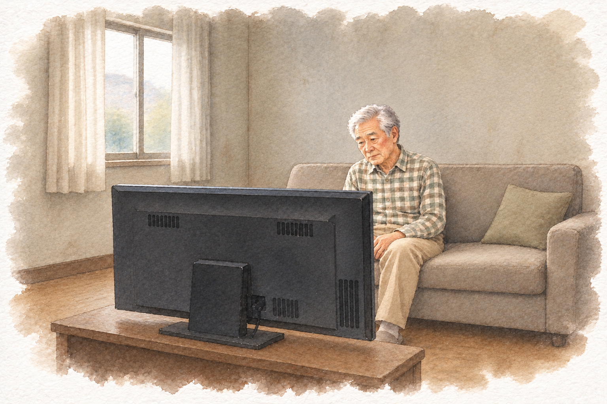
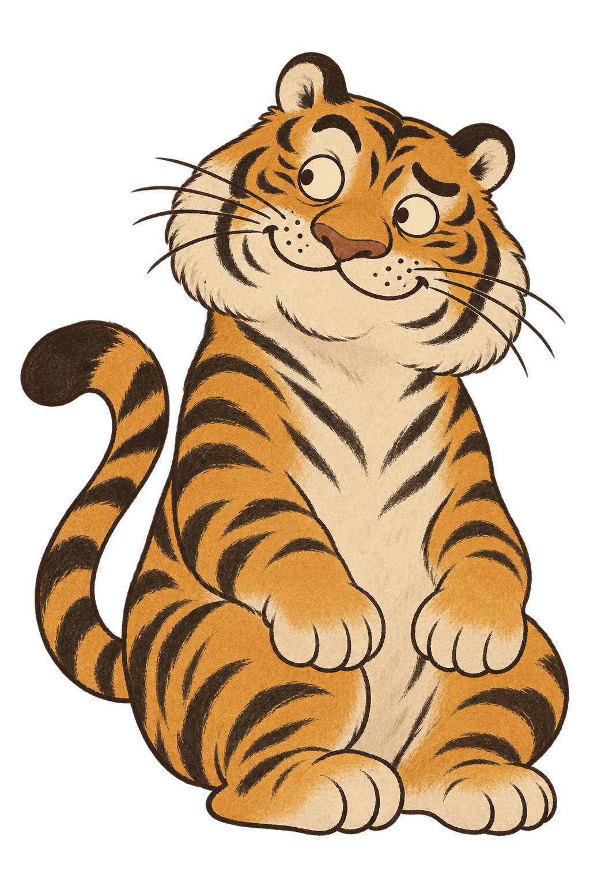

01 / 목소리로 이야기하고말 한마디로
말 한마디로
대화를 시작하도록.
작은 자판을 찾는 대신
편하게 말을 건네고
이야기를 주고받는 시간.
통화를 끊고 나서도 마음이 쓰인다면
자주 찾아뵙지 못해 마음 쓰이는
부모님과 할머니 할아버지께.
편히 말을 건네고 함께 웃을 AI 친구를 준비해요.
가족의 안부 사이사이를 채울 AI 말동무 · 출시 준비 중
“오늘은 누구와
이야기하셨을까.”
“별일 없다 하셔도
조금 적적하진 않으실까.”

자주 찾아뵙고 싶지만 마음처럼 쉽지 않으니까.
가족의 안부 사이사이 가볍게 말을 건넬 친구를 생각했어요.
부모님도 할머니 할아버지도.
오늘은 웃을 일이 하나 더 있었으면.
반갑게 맞아주는 강아지부터
정겨운 동네 이웃 같은 친구까지.
부모님이 좋아하실 얼굴과 말투를
하나씩 만나보세요.

마음이 가는 친구를 골라보세요.
“산책길에 무얼 보셨어요?
나도 그 이야기가 궁금해요.”
작은 자판을 찾는 대신
편하게 말을 건네고
이야기를 주고받는 시간.
반갑게 맞아주는 얼굴과
익숙하고 친근한 말투로.
가까운 이웃처럼 이야기해요.
소소한 수다부터 끝말잇기까지.
그날의 기분에 맞는 이야기를
쉽게 고를 수 있도록.
긴 설명보다 쉬운 한두 문장.
서두르지 않고
편안하게 나누는 대화.
다음 통화에는 부모님의 이야기가
하나 더 늘어 있기를.
부모님과 할머니 할아버지처럼 일상에서 편히 이야기할 친구가 필요한 분들을 생각하며 준비하고 있어요.
아직 준비 중이에요. 이곳에서는 말동무챗이 함께하고 싶은 일상을 먼저 소개해요.
더 편안하게 쓰실 수 있도록 다듬고 있어요. 캐릭터와 서비스 내용은 출시 과정에서 달라질 수 있어요.
이메일을 남겨주시면 서비스가 런칭되었을 때 알림을 드리겠습니다.
서비스가 이렇게 되었으면 좋겠다는 조언을 해 주세요